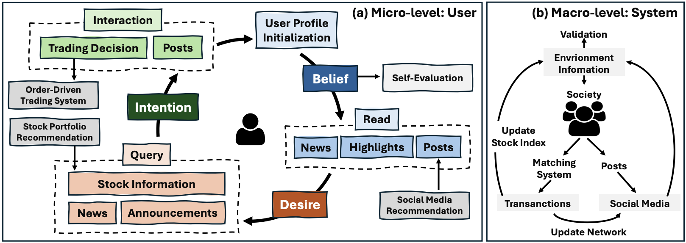
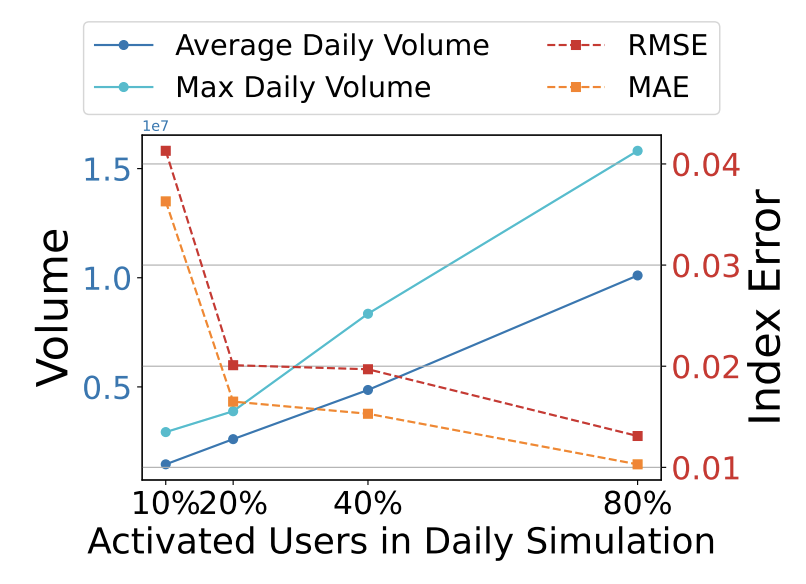

TwinMarket: A Scalable Behavioral and Social Simulation for Financial Markets
 arXiv
arXiv
We aim to build a foundation-scale market simulator where LLM-driven agents capture human-like investor behavior, social influence, and collective adaptation, enabling us to reveal, stress-test, and ultimately understand emergent macro-level financial dynamics from micro-level decision making.
Overview

🎯Core Problem
Traditional ABMs struggle to capture the diversity of human behavior, particularly irrational factors in behavioral economics
⚡Our Solution
LLM agents that account for cognitive biases, emotional fluctuations, and non-rational influences in market simulations
💡 TwinMarket examines how individual behaviors, through interactions and feedback mechanisms, give rise to collective dynamics and emergent phenomena in financial markets. Unlike traditional rule-based ABMs, our LLM-based approach captures the full spectrum of human behavior complexity.
🎯 Through experiments in a simulated stock market, we demonstrate how individual actions trigger group behaviors, leading to emergent outcomes such as financial bubbles, market recessions, and other collective socio-economic patterns that arise from the complex interplay between individual decision-making and market dynamics.
Key Features
🎯 Real-World Alignment
Grounded in established behavioral theories and calibrated with real-world data, ensuring realistic human behavior modeling
🔄 Dynamic Interaction Modeling
Captures diverse human behaviors and their interactions, particularly in the context of information propagation and social influence
📈 Scalable Market Simulations
Supports large-scale simulations, allowing researchers to analyze the impact of group size and interaction complexity on market behavior
Framework Components

TwinMarket combines micro-level user behavior simulation (BDI-driven decisions) with macro-level market infrastructure simulation (order-driven trading and social information interaction), and grounds both layers with real behavioral patterns, stock data, news, and announcements to produce realistic macro market dynamics from individual agent interactions.
👤 Micro-Level Simulation: Individual Behaviors
🧠 BDI Framework
- 💡 Belief: Agent's understanding of the market
- 🎯 Desire: Agent's objectives or preferences
- ⚡ Intention: Concrete trading actions.
📊 Behavioral Biases
Influencing trading decisions and contributing to market heterogeneity
🌐 Macro-Level Simulation: Social Interactions
🌐 Social Network Construction
- 🔗 Dynamic Connections: Network evolves based on trading patterns
- 📋 Behavior Similarity: Agents connect through similar strategies
- ⏱️ Time Decay: Recent interactions weighted more heavily
📡 Information Propagation
- 📦 Information Aggregation: Collecting data from social connections
- 👑 Opinion Leaders: Influential agents shape market sentiment
- 🔄 Echo Chambers: Formation of polarized belief groups
Data Sources

👤 Real User Profiles
From Xueqiu social media platform
💱 Transaction Details
Historical trading data from Xueqiu
📈 Stock Data
SSE 50 index from CSMAR database
📰 News & Announcements
From Sina Finance, 10jqka, and CNINFO
Experimental Results
Information Propagation
Opinion Leader Emergence
Influential nodes emerge and shape network opinions through cascading influence
Simulations reveal the emergence of opinion leaders who exert significant influence on the network, shaping market sentiment and trading behaviors
Information Polarization
Information spreads differently across groups, creating echo chambers and polarized beliefs
Different information signals lead to the formation of distinct groups with divergent beliefs, creating self-reinforcing feedback loops
Behavioral Polarization Under Rumors

Rumors lead to a divergence in user beliefs and the formation of distinct echo chambers. At the same time, rumors make users more likely to sell, leading to significant increase in sell/buy ratio, and eventually cause the market to suffer sharp declines.
Market Dynamics - Stylized Facts

📊 Fat-tailed Returns
Extreme price movements occur more frequently than normal distribution
📈 Volatility Clustering
High volatility periods are followed by high volatility periods
⚖️ Leverage Effect
Negative returns correlate with increased future volatility
💹 Volume-Return Relationship
Trading volume positively correlates with price changes
Emergent Group Behaviors: The framework reveals self-fulfilling prophecies where collective expectations drive trends, and information cascades where traders rely on perceived consensus rather than fundamental analysis.
Scalability
We test scaling by varying the proportion of activated traders (10%, 20%, 40%, 80%) while keeping other settings fixed. As activation increases, both average and peak trading volume rise, and prediction errors (RMSE/MAE) decrease.


At larger scales (up to 1,000 agents), TwinMarket still tracks real index dynamics with reasonable fidelity, showing that the framework remains both behaviorally realistic and computationally tractable as participation grows.
How to Cite
If you use TwinMarket in your research, please cite the following paper:
@inproceedings{yang2025twinmarket,
title={TwinMarket: A Scalable Behavioral and Social Simulation for Financial Markets},
author={Yuzhe Yang and Yifei Zhang and Minghao Wu and Kaidi Zhang and
Yunmiao Zhang and Honghai Yu and Yan Hu and Benyou Wang},
booktitle={The Thirty-ninth Annual Conference on Neural Information Processing Systems (NeurIPS)},
year={2025},
url={https://arxiv.org/abs/2502.01506},
}